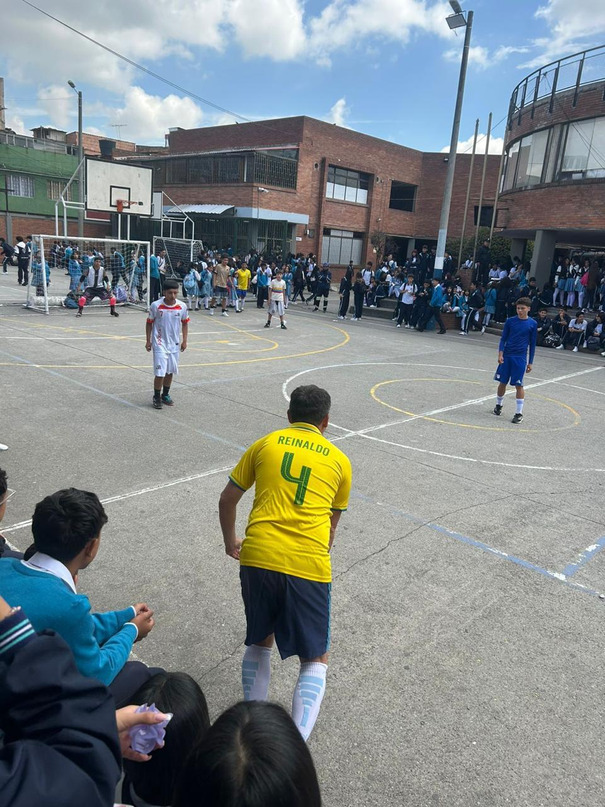
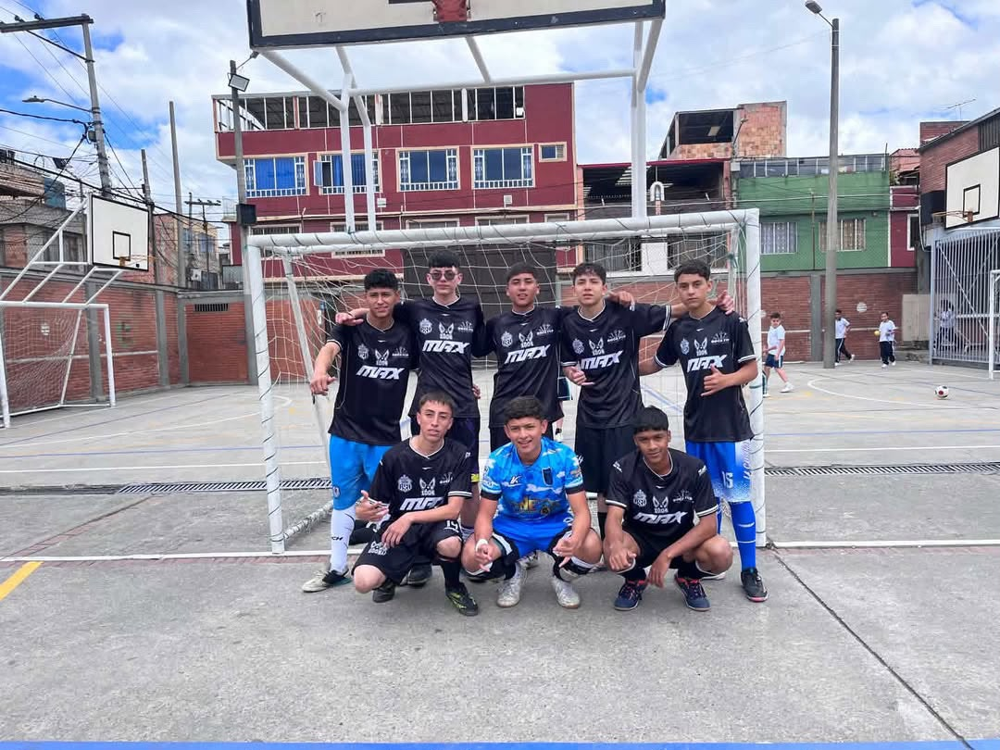
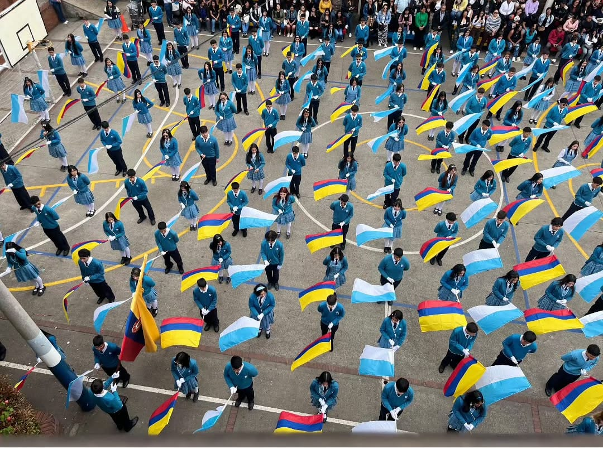
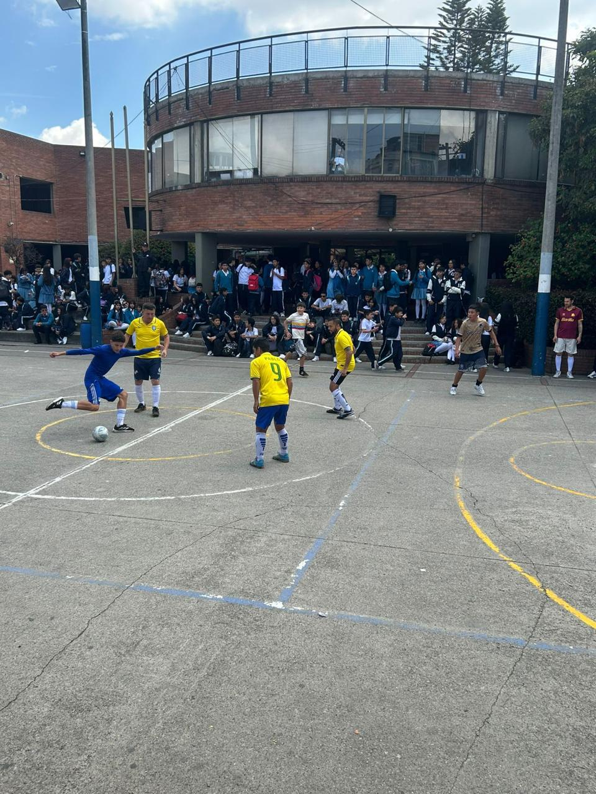
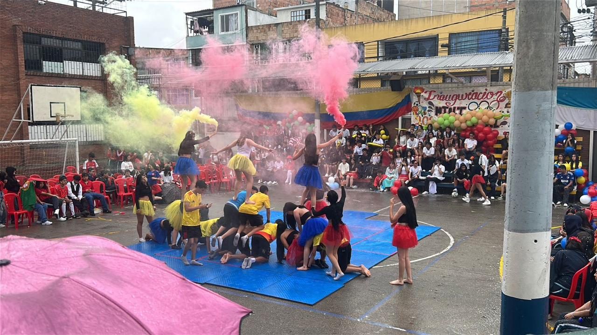
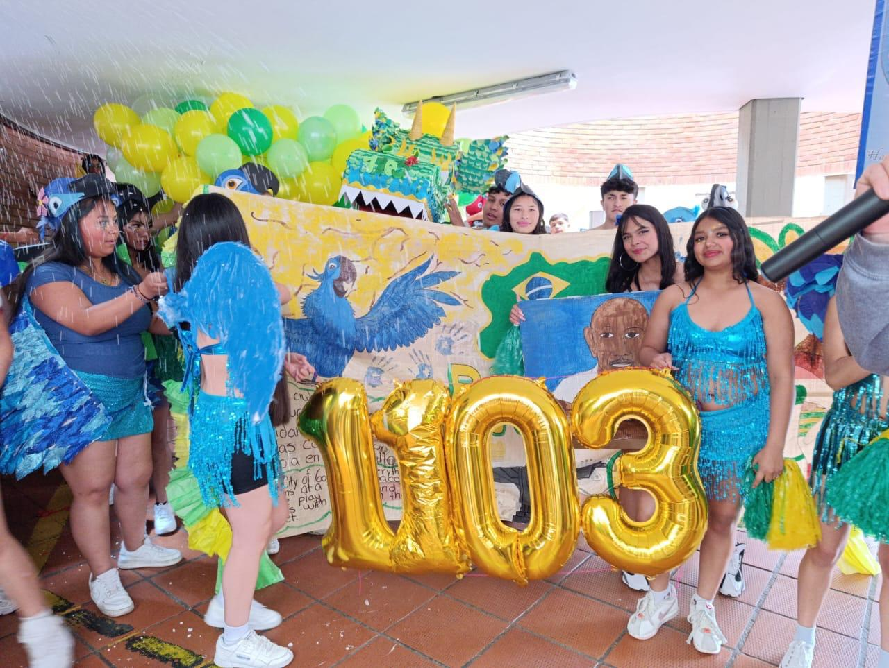
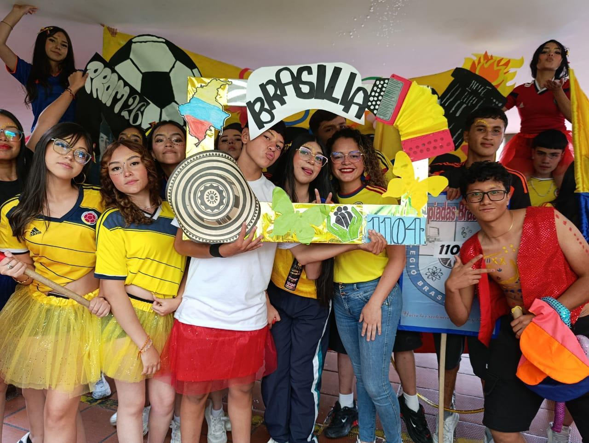
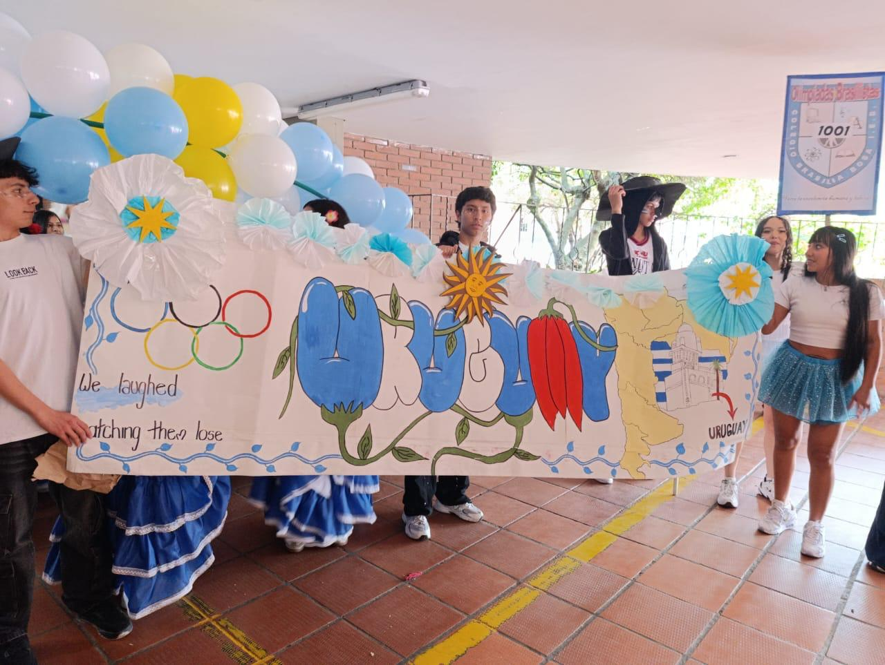
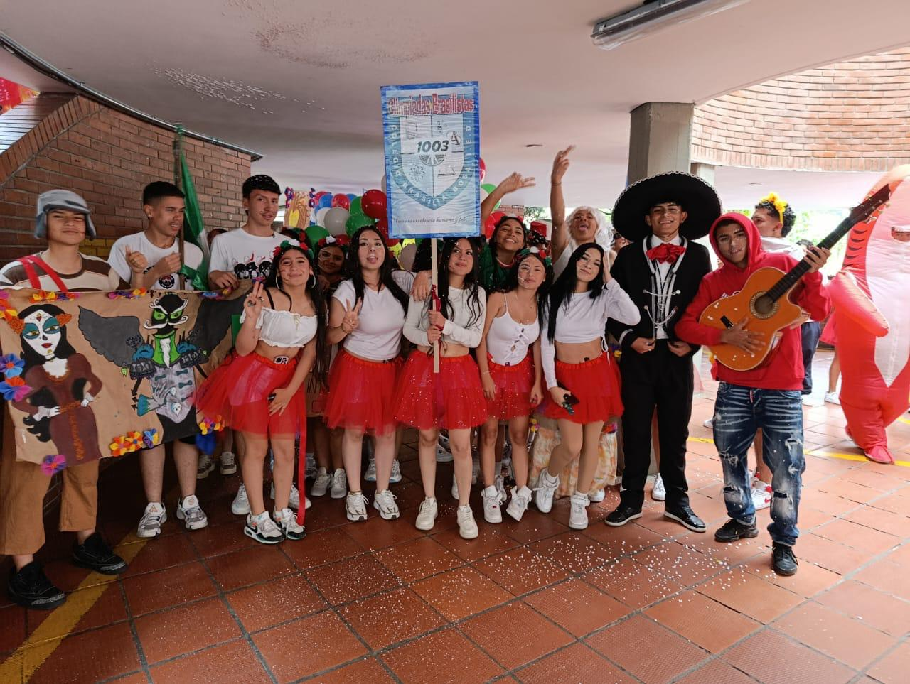
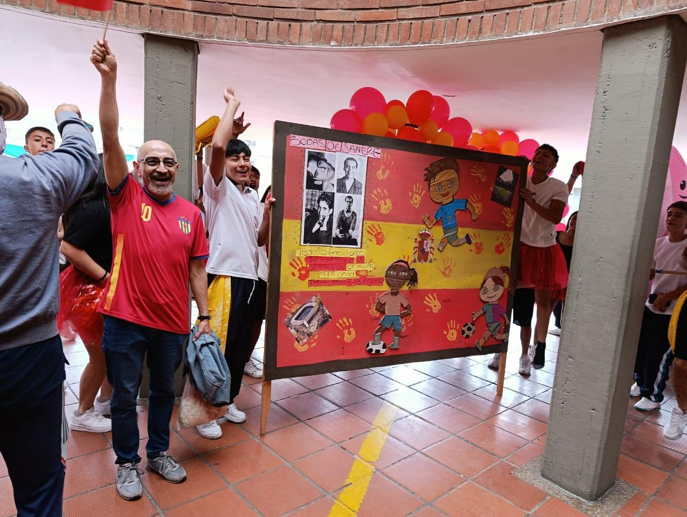

Así se vivió el deporte en nuestro colegio
Un espacio para conocer, compartir y recordar los eventos deportivos, culturales y escolares del Colegio Brasilia Bosa J.M. ¡Vive la emoción del microfútbol y de la comunidad 1103 y 1104!
Ver resultados del torneo ↓📅 Eventos del año
Las actividades que reúnen a nuestra comunidad educativa.
Torneos deportivos
Encuentros de microfútbol masculino y femenino donde los estudiantes demuestran talento y trabajo en equipo.
Jornadas recreativas
Espacios para realizar actividad física, compartir con compañeros y fortalecer la convivencia.
Campeonatos escolares
Competencias llenas de emoción, respeto y espíritu deportivo entre diferentes cursos.
Actividades culturales
Presentaciones, barras y comparsas de países que muestran los talentos de los estudiantes.
🔥 Inauguración deportiva
Así comenzó una jornada llena de fútbol, emoción y participación estudiantil.

⚽ ¡La cancha se llenó de emoción!
La inauguración reunió a estudiantes y espectadores alrededor de la cancha escolar. Los equipos se prepararon para competir mientras la comunidad educativa acompañaba los encuentros desde los alrededores.
Las imágenes muestran el ambiente de la jornada, los jugadores en la cancha y el entusiasmo de los estudiantes que estuvieron presentes.
🏆 Resultados del microfútbol
Semifinales y finales de la rama masculina y femenina.
⚽ Rama masculina
🏆 ¡Campeón: Curso 1004!
🏅 Rama femenina
🚫 Partido cancelado
La gran final femenina entre 1103 y 1004 fue cancelada, por lo que no se definió campeona en la rama femenina. ¡Gracias a todas las jugadoras por su esfuerzo y dedicación durante el torneo!
🏆 ¡Curso 1004, campeón del torneo!
El equipo de 1004 se coronó campeón de la rama masculina tras vencer a los profesores en la gran final.

🥇 Los campeones del microfútbol
Con esfuerzo, disciplina y mucho trabajo en equipo, los estudiantes del curso 1004 se llevaron el título masculino al ganarle a los profesores en una final llena de emoción.
¡Felicitaciones a todos los jugadores por su gran desempeño y por dejar en alto el nombre de su curso!
Más información sobre la final
El curso 1004 llegó a la gran final tras vencer a 1003 en semifinales y se enfrentó al equipo de profesores, al que superó para quedarse con el título de campeón de la rama masculina del torneo.
🏆 El deporte nos une
Más allá de ganar o perder, cada actividad deportiva es una oportunidad para aprender sobre respeto, disciplina, cooperación y compañerismo.
Microfútbol
Partidos llenos de emoción.
Barras y comparsas
Cada curso representa un país.
🏳️ Entrega de banderas · Último evento del año
El cierre deportivo y cultural del año escolar a cargo de los cursos de once y décimo.
🎓 Un cierre lleno de orgullo
Como último evento del año, se realizó la entrega de banderas a cargo de los estudiantes de once y décimo, en un acto cívico lleno de respeto y sentido de pertenencia.
Con esta ceremonia se despidió un año lleno de deporte, cultura y buenos momentos para toda la comunidad del Colegio Brasilia Bosa J.M.

Más información sobre la ceremonia
Durante la entrega de banderas, los estudiantes de décimo llevaban la bandera de Colombia y los de once la bandera del colegio. En el acto se realizaba el intercambio de las banderas, como símbolo del relevo y la despedida entre los cursos.
📸 Así se vivió
Momentos destacados de nuestra jornada deportiva.
La cancha comenzó a llenarse de estudiantes y espectadores. Los equipos se prepararon para salir a jugar y representar a sus compañeros.
Cada curso llegó representando a un país — Colombia, Brasil, Uruguay — con carteles, disfraces, música y mucho color.
El curso 1004 se coronó campeón masculino al vencer a los profesores en la gran final. La final femenina entre 1103 y 1004 fue cancelada.
La actividad permitió compartir, participar y fortalecer el compañerismo a través del deporte.
Los estudiantes de once y décimo realizaron la entrega de banderas, cerrando así el año escolar con un acto cívico lleno de orgullo.
🖼️ Galería del evento
Revive algunos de los momentos capturados durante la jornada.







📚 ¿Por qué el deporte?
Nuestro proyecto se apoya en tres ideas: actividades deportivas, blog informativo y eventos.
Salud y bienestar
Según la OMS, la actividad física regular mejora la salud física y mental, y en los jóvenes estimula el crecimiento y el desarrollo motor y cognitivo.
Un blog que informa
El blog informativo permite difundir de forma organizada las actividades y eventos del colegio, para que 1103 y 1104 conozcan fechas, horarios y resultados.
Eventos que unen
Los eventos fortalecen la convivencia, la comunicación y el sentido de pertenencia hacia el Colegio Brasilia Bosa J.M.
🗓️ Calendario escolar
Un recorrido por los principales momentos del año.
| Mes | Actividad destacada |
|---|---|
| Enero | 🏫 Inicio del año escolar |
| Febrero | 🎭 Actividades culturales |
| Marzo | ⚽ Jornadas deportivas |
| Abril | 📚 Proyectos escolares |
| Mayo | 🎉 Actividades de integración |
| Junio | 🏆 Torneos deportivos |
| Julio | 🏫 Regreso a clases |
| Agosto | 🔥 Inauguración y actividades deportivas |
| Septiembre | ⚽ Semifinales y finales de microfútbol |
| Octubre | 💡 Proyectos y ferias |
| Noviembre | 🏳️ Entrega de banderas y cierre del año |
👥 Sobre nuestro proyecto
Multi Eventos Sport es una propuesta del Colegio Brasilia Bosa J.M. para difundir las actividades deportivas y eventos escolares mediante un blog informativo, ayudando a que los estudiantes de los cursos 1103 y 1104 se mantengan informados y puedan recordar las experiencias vividas durante el año.
Integrantes · Curso 1103 J.M.
Cristian Ortiz · Santiago Marín · Juan Rivera
Docentes orientadores: W. Julian Aldana · Marlon Pacheco · Enrique